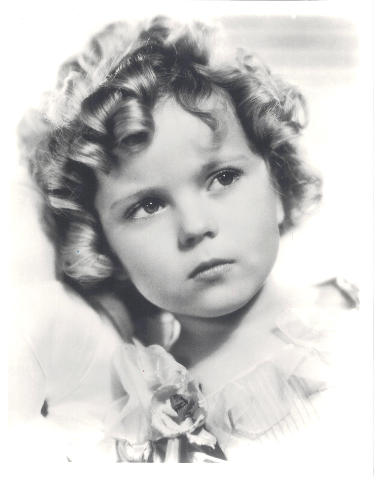

Product No. HEC-0097
$20
Shipping: $8.95
Description
8x10 B&W photograph
Full Description
Shirley Temple (Deceased) was an American actress, singer, dancer, and diplomat who became one of the most famous child stars in Hollywood history. Born Shirley Temple Black on April 23, 1928, in Santa Monica, California, she began appearing in films as a very young child and quickly became a major box-office attraction during the 1930s. Temple was known for her curly hair, cheerful personality, singing, and tap-dancing ability. Her most famous films include "Bright Eyes," "Curly Top," "Heidi," "The Little Colonel," "Captain January," "Rebecca of Sunnybrook Farm," and "The Little Princess." Her performance of "On the Good Ship Lollipop" in "Bright Eyes" became one of the best-known songs associated with her career. At the height of the Great Depression, Temple's upbeat films made her enormously popular with audiences. She received a special Juvenile Academy Award in 1935 in recognition of her contribution to motion pictures. As she grew older, Temple continued acting but eventually left Hollywood and began a second distinguished career in public service. She served as a United States ambassador to Ghana and later to Czechoslovakia, as well as holding other diplomatic posts. Shirley Temple died on February 10, 2014, at age 85. Her classic films, instantly recognizable image, and extraordinary childhood career continue to make her photographs, dolls, autographs, and movie memorabilia highly popular with collectors.
Condition
Excellent condition